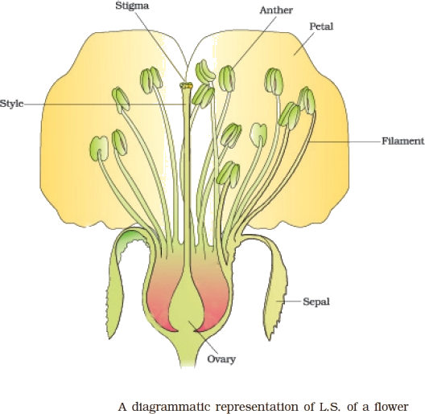
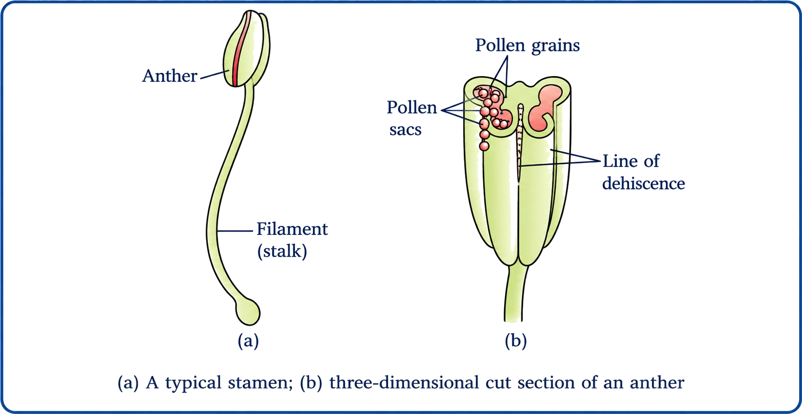
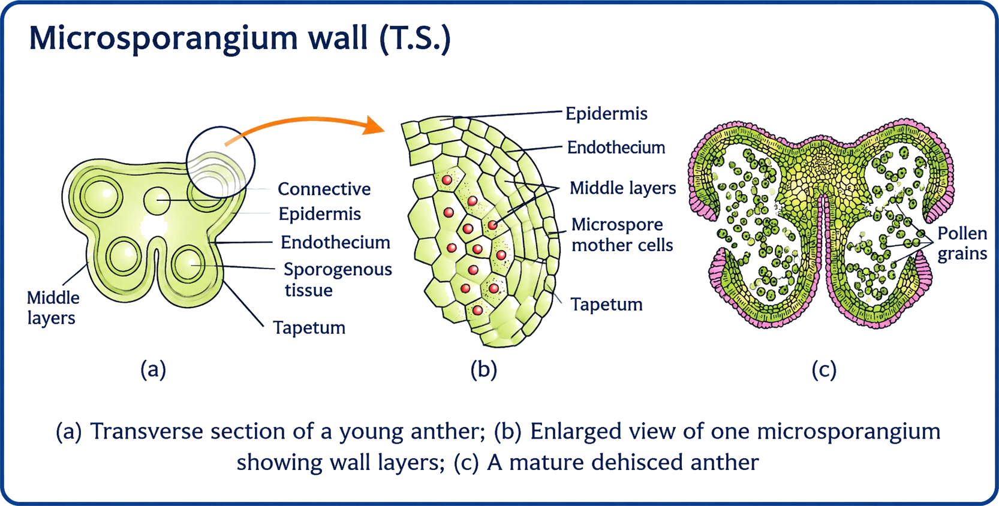
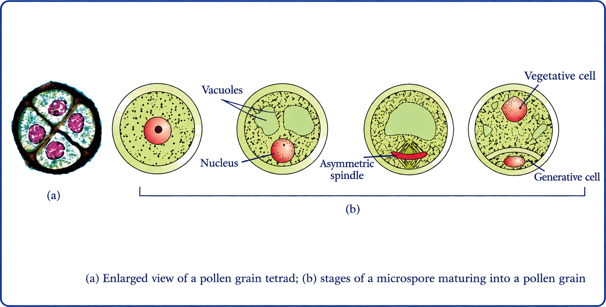
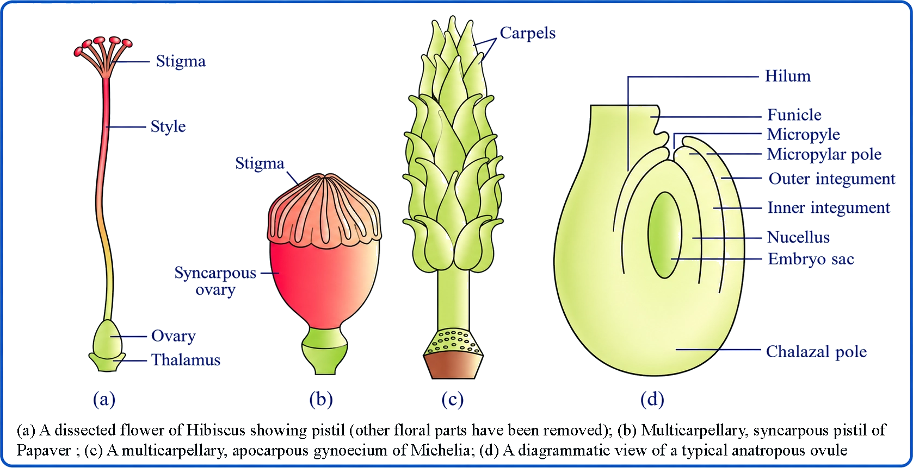
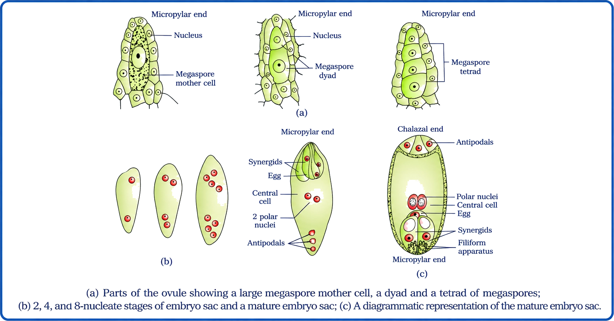
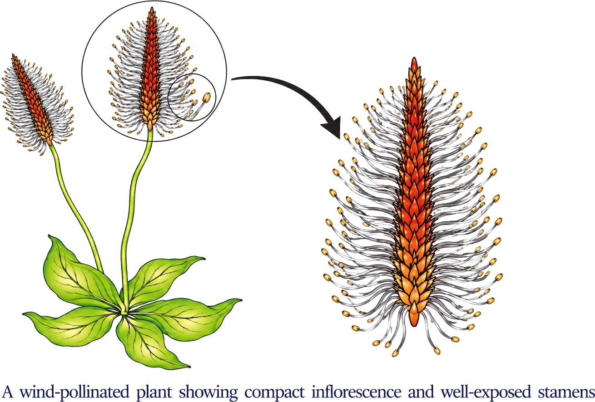
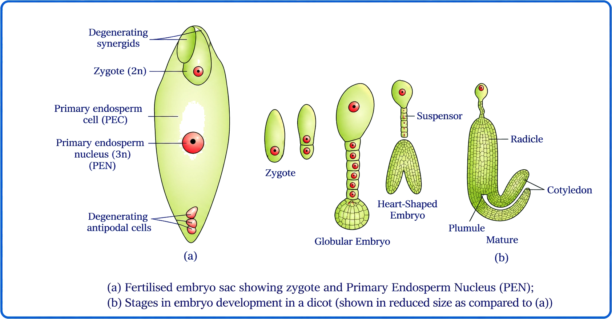
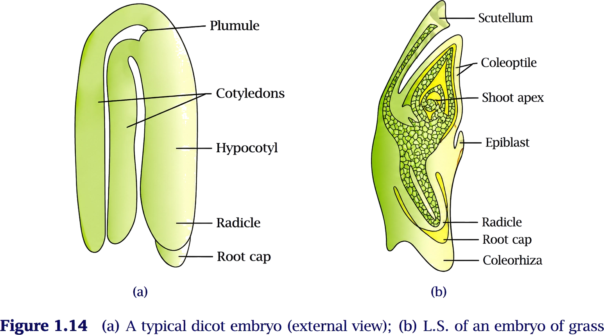

CLASS 12 · Biology
Sexual Reproduction in Flowering Plants (Angiosperms)
Continuation of species + variation for survival in changing environments
WHY REPRODUCTION MATTERS
📖Definition & Introduction
- Reproduction is the biological process by which organisms produce offspring, ensuring continuation of species.
- Individuals have a limited life span, but a species can persist for long periods unless extinct.
- Without reproduction, a species cannot survive beyond the life of existing individuals.
- Asexual reproduction: single parent; offspring are genetically similar (clones) with minimal variation.
- Sexual reproduction: formation of gametes and their fusion; generates new variants in offspring.
- Variation increases chances of survival when the environment changes (diseases, climate, competition).
🎯Key Concepts
- 🔁Species continuity depends on successful production of offspring generation after generation.
- 🧬Sexual reproduction creates genetic variation; asexual reproduction mostly preserves the parental genotype.
- 🤝Sexual reproduction requires gametes and their fusion (fertilisation) to form a new individual.
- 🌦️New variants provide a survival advantage under changing environments and new selection pressures.
- ⚠️Clonal populations are vulnerable: a single disease or stress can affect many similarly.
🔎WHAT MAKES SEXUAL REPRODUCTION SPECIAL?
- Involves gamete formation and fusion to form a new individual.
- Mixes genetic material from parents, producing new combinations (new variants).
- Natural selection can favour beneficial variants, raising population fitness over time.
- In angiosperms, the flower is the sexual reproductive organ; end products are seeds and fruits.
⚙️SURVIVAL ADVANTAGE: VARIATION VS NO VARIATION
- If environment changes suddenly, clones may fail together due to similar susceptibility.
- Variation increases probability that some offspring tolerate stress (pathogen, drought, heat).
- Asexual reproduction is efficient for rapid multiplication in stable, favourable conditions.
- Sexual reproduction is slower/costlier but crucial for long-term persistence in fluctuating environments.
⚖️ASEXUAL vs SEXUAL REPRODUCTION (EXAM FAVOURITE)
| Basis | Asexual reproduction | Sexual reproduction |
|---|---|---|
| Parents involved | One parent | Usually two parents (male & female gametes) |
| Gametes & fusion | No gametes; no fertilisation | Gametes formed; fusion (fertilisation) occurs |
| Genetic similarity | Offspring mostly clones of parent | Offspring genetically different (new variants) |
| Variation level | Low; mainly due to mutations | High; due to recombination and fusion of gametes |
| Best suited for | Stable, favourable environment; rapid increase | Changing environment; long-term survival advantage |
| Evolutionary role | Slower adaptive evolution | Faster adaptive evolution via selection on variants |
💡Memory Technique
“Mnemonic: "SEx = Shuffle, A = Alone"”
Indian botanist known for plant embryology and experimental approaches in angiosperm reproduction
PANCHANAN MAHESHWARI
Definition & Introduction
- Panchanan Maheshwari (1904–1966) was a distinguished Indian botanist known for work in plant embryology and reproductive biology.
- Popularised the use of embryological characters in plant taxonomy (classification).
- Emphasised artificial culture of immature embryos for developmental studies and plant propagation.
- His work on test-tube fertilisation and intra-ovarian pollination gained worldwide recognition.
- Helped establish the University of Delhi as a major centre for embryology and tissue culture research.
🎯Key Concepts
- LABPlant embryology: study of embryo sac, fertilisation and early development in angiosperms.
- CULTImmature embryo culture: artificial culture to support experimental developmental studies and propagation.
- TAXOEmbryology in taxonomy: embryological traits used as characters for classification.
- TECHExperimental techniques: test-tube fertilisation and intra-ovarian pollination (plant reproduction studies).
- INSTUniversity of Delhi: developed as a strong centre for embryology and tissue culture.
- EDUCBiology education: leadership in first NCERT higher secondary Biology textbooks (1964).
🔎WHY HE IS MENTIONED IN THIS CHAPTER
- He made major contributions to plant embryology, a core theme in angiosperm reproduction.
- Popularised embryological characters as tools for plant taxonomy (classification).
- Promoted immature embryo culture, supporting experimental study of development and propagation.
⚙️EXAM-ORIENTED FACTS (NAME-LINKING)
- Scientist linked with plant embryology and tissue culture: Panchanan Maheshwari.
- Associated techniques: test-tube fertilisation; intra-ovarian pollination (experimental).
- Education: leadership in first NCERT higher secondary Biology textbooks (1964).
- Honours: Fellow of the Royal Society (FRS); fellow of INSA.
Flower is the site of sexual reproduction; anther and ovule are the exact gametophyte-forming sites
FLOWER AS REPRODUCTIVE ORGAN (ANGIOSPERMS)
📖Definition & Introduction
- In angiosperms, the flower is a specialised shoot bearing reproductive whorls that enable sexual reproduction.
- Sexual reproduction in flowers ultimately produces seeds (from ovules) and fruits (from ovaries).
- Anther (in androecium) contains microsporangia that form pollen grains (male gametophyte).
- Ovule (inside ovary of gynoecium) forms embryo sac (female gametophyte).
- Flower diversity (inflorescence and structure) reflects adaptations that increase pollination and fertilisation success.
- Colour and scent act as attractants to pollinating agents; they are biological aids, not “for humans”.
🖼️ Diagram

🎯Key Concepts
- 🧬Male unit develops in anther → pollen grains (male gametophyte).
- 🧫Female unit develops in ovule (within ovary) → embryo sac (female gametophyte).
- 🌿Reproductive whorls: androecium (stamens) and gynoecium (carpels/pistil).
- 🎯Exam precision: asked “reproductive sites” → write anther and ovule, not stamen and pistil.
- 👃Attractants: colour + scent; rewards often nectar/pollen to ensure visits.
- 🌾If flowers are small, many form an inflorescence to appear conspicuous to pollinators.
🔎WHAT EXACTLY IS FORMED WHERE?
- Anther contains microsporangia that mature into pollen sacs full of pollen grains.
- Pollen grain is the male gametophyte; male gametes form later inside it.
- Ovule is the megasporangium; inside it, the embryo sac develops as female gametophyte.
- Ovary may have one ovule (e.g., wheat, rice, mango) or many (e.g., papaya, water melon, orchids).
⚙️DIVERSITY + ATTRACTANTS: WHY FLOWERS LOOK DIFFERENT
- Flowers vary in inflorescence and structure to maximise pollen transfer and fertilisation success.
- Attractants: bright colour, fragrance, sometimes special odours for specific insects.
- Small flowers often cluster into an inflorescence to act as one large visual signal.
- Attractants increase contact of pollinators with anthers and stigma.
⚖️ANDROECIUM vs GYNOECIUM (Quick Contrast)
| Basis | Androecium | Gynoecium |
|---|---|---|
| Reproductive role | Male whorl | Female whorl |
| Main units | Stamens | Carpels / pistil |
| Specific site asked in exams | Anther | Ovule (in ovary) |
| Develops | Pollen grain (male gametophyte) | Embryo sac (female gametophyte) |
| Post-fertilisation outcome | Contributes male gametes | Ovary → fruit; ovule → seed |
💡Memory Technique
“Mnemonic: Anther = Androecium; Ovule = Ovary”
Stamen structure, dithecous–tetrasporangiate anther, and microsporangium wall layers (tapetum focus)
STAMEN AND MICROSPORANGIUM
📖Definition & Introduction
- Stamen is the male reproductive unit of a flower; its anther bears microsporangia that form pollen grains.
- A typical stamen has filament (stalk) and anther (terminal, usually bilobed).
- A typical angiosperm anther is dithecous and tetrasporangiate (four microsporangia/pollen sacs).
- Each microsporangium has a characteristic 4-layered wall surrounding sporogenous tissue.
- Outer wall layers aid protection + anther dehiscence; the tapetum nourishes developing microspores.
🖼️Diagram

🎯Key Concepts
- 🧩Filament attaches proximally to thalamus or petal; anther is the pollen-producing part.
- 🧠Bilobed anther: 2 lobes separated by a longitudinal groove.
- 🧱Dithecous: each lobe has 2 theca (pollen chambers), giving 4 microsporangia total.
- 🧫Tetrasporangiate: 4 microsporangia at corners in T.S.; later become elongated pollen sacs.
- 🧬Sporogenous tissue forms pollen/microspore mother cells (PMCs) in young anther.
- 🍽️Tapetum is nutritive; cells dense, often bi-/multinucleate due to mitosis without cytokinesis/endomitosis.
🔎ANTHER ORGANISATION (DITHECOUS, TETRASPORANGIATE)
- Bilobed: two anther lobes separated by a longitudinal groove.
- Dithecous: each lobe contains two theca (pollen chambers).
- Tetrasporangiate: total four microsporangia, two in each lobe.
- In transverse section, anther is often tetragonal; microsporangia lie at the corners.
- With maturation, each microsporangium becomes a pollen sac filled with pollen grains.
⚙️MICROSPORANGIUM WALL (4 LAYERS) + TAPETUM HIGHLIGHTS

- Epidermis: outermost protective layer.
- Endothecium: mechanical support; helps in anther dehiscence.
- Middle layers: transient supportive layers; also assist dehiscence.
- Tapetum: innermost, nutritive to developing microspores/pollen.
- Tapetal cells: dense cytoplasm and commonly bi-/multinucleate.
⚖️MICROSPORANGIUM WALL LAYERS: WHO DOES WHAT?
| Layer (outside → inside) | Key feature | Main role |
|---|---|---|
| Epidermis | Outermost, protective | Protects anther contents |
| Endothecium | Mechanical layer | Helps anther dehiscence |
| Middle layers | 2–3 transient layers (often) | Support + aid dehiscence |
| Tapetum | Dense cytoplasm; often bi-/multinucleate | Nutrition to developing microspores/pollen |
💡Memory Technique
“Mnemonic: E−E−M−T (Wall layers)”
PMC (2n) undergoes meiosis → microspore tetrad (n) → pollen grain (male gametophyte)
MICROSPOROGENESIS AND POLLEN
📖Definition & Introduction
- Microsporogenesis is formation of haploid microspores (n) from pollen mother cell (PMC, 2n) by meiosis.
- PMC arises from sporogenous tissue inside each microsporangium (pollen sac) of anther.
- Meiosis in each PMC produces a microspore tetrad (4 microspores, each n).
- Microspores separate on anther maturation and develop into pollen grains (male gametophytes).
- A pollen grain has a resistant wall (exine, sporopollenin) and forms a pollen tube via germ pore.
🎯Key Concepts
- 🧬Meiosis: PMC (2n) → 4 microspores (n); reduction division ensures haploid gametophyte.
- 🧫Microspore tetrad: 4 microspores temporarily held together, then dissociate into individual pollen.
- 🛡️Exine contains sporopollenin: extremely resistant; enables long preservation (fossil pollen).
- 🧱Intine is cellulose + pectin; forms pollen tube during germination.
- 🕳️Germ pore: aperture in exine lacking sporopollenin; pollen tube emerges here.
- 👥Shedding stage: ~60% angiosperms shed 2-celled pollen (vegetative + generative cell).
🔎POLLEN GRAIN: STRUCTURE (HIGH-YIELD)

⚙️DEVELOPMENTAL STAGES, VIABILITY & APPLICATIONS
- 2-celled pollen: vegetative cell + generative cell at shedding (common in ~60% angiosperms).
- 3-celled pollen: generative cell divides mitotically before shedding → 2 male gametes present.
- Vegetative cell: larger, food reserve; controls pollen tube growth.
- Generative cell: smaller, dense; divides to form two male gametes (sperms).
- Viability varies: rice/wheat ~30 min; some Rosaceae, Leguminoseae, Solanaceae viable for months.
⚖️2-CELLED vs 3-CELLED POLLEN (AT SHEDDING)
| Basis | 2-celled pollen | 3-celled pollen |
|---|---|---|
| Cells present | Vegetative + generative cell | Vegetative cell + two male gametes |
| When sperms formed | Generative cell divides during pollen tube growth | Generative cell divides before pollen is shed |
| Key division type | Mitosis of generative cell | Mitosis of generative cell |
| Exam focus | Common in many species (~60%) | Less common; faster readiness for fertilisation |
💡Memory Technique
“Mnemonic: MEI-4-n and EX-SPORO”
Gynoecium types → ovule parts → megasporogenesis → 8-nucleate, 7-celled embryo sac (monosporic)
PISTIL, OVULE & EMBRYO SAC
📖Definition & Introduction
- Pistil (carpel) is the female reproductive part: stigma + style + ovary; ovules in ovary form the female gametophyte (embryo sac).
- Gynoecium may be monocarpellary (one carpel) or multicarpellary (two or more carpels).
- Syncarpous gynoecium: carpels fused; apocarpous: carpels free.
- Ovule (= megasporangium) is attached to placenta by funicle and contains nucellus with the embryo sac.
- Megasporogenesis: MMC (2n) in nucellus undergoes meiosis → 4 megaspores (n); usually one functional.
- Monosporic embryo sac: functional megaspore (n) undergoes free-nuclear mitoses → mature 8-nucleate, 7-celled embryo sac.
🖼️Diagram

🎯Key Concepts
- 🧩Stigma receives pollen; style is the passage; ovary houses ovules on placenta inside locule.
- 🧷Label an ovule: funicle (stalk) joins at hilum; integuments (1 or 2) surround nucellus leaving micropyle; opposite end is chalaza.
- 🌱Embryo sac is haploid (from megaspore), even though embedded in diploid nucellus (2n).
- 🎯Mature embryo sac: egg apparatus (egg + 2 synergids) at micropyle; 3 antipodals at chalaza; central cell with 2 polar nuclei.
- 🧭Filiform apparatus in synergids helps guide pollen tube entry into embryo sac.
🔎GYNOECIUM: TYPES & EXAM TERMS
- Monocarpellary: single carpel forming one pistil (e.g., pea).
- Multicarpellary: two or more carpels in a flower.
- Syncarpous: carpels fused; ovary may be multilocular or unilocular (fusion patterns vary).
- Apocarpous: carpels free; each carpel behaves like a separate pistil.
- Locule = ovarian cavity; placenta lies in locule and bears ovules.
⚙️MEGASPOROGENESIS → MONOSPORIC EMBRYO SAC (8-NUCLEATE, 7-CELLED)

- In nucellus (2n), one MMC (2n) differentiates, usually near the micropylar region.
- MMC undergoes meiosis → tetrad of 4 megaspores (n).
- Typically 1 megaspore functional; remaining 3 degenerate (majority of angiosperms).
- Functional megaspore nucleus undergoes 3 mitoses: 2-nucleate → 4-nucleate → 8-nucleate (free-nuclear).
- Cell walls form: egg apparatus (egg + 2 synergids) at micropyle; 3 antipodals at chalaza.
⚖️Multicarpellary gynoecium/pistil: SYNCARPOUS vs APOCARPOUS
| Basis | Syncarpous | Apocarpous |
|---|---|---|
| Carpels | Fused | Free (separate) |
| Pistil appearance | Appears as one compound pistil | Several distinct pistils |
| Common exam cue | Use term syncarpous when carpels are stated as fused | Use term apocarpous when carpels are stated as free |
| Example (standard) | Hibiscus, tomato | Michelia, strawberry |
💡Memory Technique
“Mnemonic: SSO + FuHi InMi / ChaNu + 3-2-3”
Pollen transfer to stigma: autogamy, geitonogamy, xenogamy + cleistogamy/chasmogamy & genetic consequences
POLLINATION TYPES
📖Definition & Introduction
- Pollination = transfer of pollen grains from anther to stigma of a pistil.
- In flowering plants, it is a pre-fertilisation event that brings non-motile male and female gametes into proximity for fertilisation to occur later.
- Types depend on the source of pollen: same flower, same plant, or different plant.
- Autogamy is self-pollination within a flower; geitonogamy is between flowers of the same plant; xenogamy is between different plants of the same species.
- Special cases: cleistogamous (closed) flowers enforce autogamy; chasmogamous (open) flowers may show self- or cross-pollination depending on pollen source.
🖼️Diagram

Pollination type depends on pollen source. Cleistogamy enforces autogamy; chasmogamous flowers may show autogamy/geitonogamy/xenogamy depending on pollen source.
🎯Key Concepts
- 🎯Core test: identify source plant of pollen, not the agent (wind/insect).
- 🧬Only xenogamy surely brings genetically different pollen to stigma.
- 🔁Geitonogamy is functionally cross (needs agent) but genetically self (same plant).
- 🔒Cleistogamy gives assured seed set even without pollinators; flowers never open.
- 🌸Examples with both flower types: Viola, Oxalis, Commelina.
🔎WHAT DECIDES THE TYPE?
- Autogamy: anther → stigma of the same flower.
- Geitonogamy: anther → stigma of a different flower on the same plant.
- Xenogamy: anther → stigma of a flower on a different plant (same species).
- Agent may be wind/insect/water; type depends on source of pollen.
⚙️CLEISTOGAMY vs CHASMOGAMY (EXAM-FAVOURITE)
- Cleistogamous flowers do not open; pollen contacts stigma inside the bud.
- Cleistogamy is invariably autogamous; foreign pollen cannot reach the stigma.
- Ensures assured seed set even when pollinators are absent or conditions are adverse.
- Chasmogamous flowers open with exposed anthers/stigma; may show selfing or outcrossing.
- Plants like Viola, Oxalis, Commelina can bear both flower types.
⚖️Autogamy vs Geitonogamy vs Xenogamy
| Basis | Autogamy | Geitonogamy | Xenogamy |
|---|---|---|---|
| Pollen source | Same flower | Different flower, same plant | Different plant (same species) |
| Needs pollinating agent? | Usually not (if anther-stigma proximity + synchrony allow selfing) | Generally yes (pollen must move between flowers) | Yes (pollen must move between plants) |
| Genetic consequence | Selfing → maintains homozygosity; low variation | Genetically like selfing (same plant) | Introduces new gene combinations; increases variation |
| Guarantees genetically different pollen? | No | No | Yes (true outcrossing) |
| Special note | Complete autogamy is rare in normal open flowers | Cross-like in function, self-like genetically | Only type that surely brings genetically different pollen to stigma |
💡Memory Technique
“A-G-X: Same flower, Same plant, Different plant”
Abiotic (wind, water) vs biotic (animals): how flowers match their pollinators
POLLINATING AGENTS AND ADAPTATIONS
📖Definition & Introduction
- Pollination is transfer of pollen from anther to stigma using an external agent.
- Agents are abiotic (wind, water) and biotic (animals).
- Abiotic pollination is largely a chance event; flowers compensate by producing huge pollen quantities.
- Wind/water-pollinated flowers are usually non-showy and nectarless (no need to attract animals).
- A pollinator causes pollen transfer; a robber takes nectar/pollen without effective pollination.
🎯Key Concepts
- 🌬️Anemophily: light, non-sticky pollen; exposed anthers; large/feathery stigma traps airborne pollen.
- 🌊Hydrophily (rare): pollen protected from wetting; water currents carry pollen to stigma.
- 🐝Zoophily: flowers offer attractants (colour/odour) and rewards (nectar/pollen); pollen often sticky.
- 🌽Maize: corn silk = long stigma+style; acts as a wind-borne pollen trap.
- 🕵️Not every visitor is a pollinator: check contact with anther + stigma and effective transfer.
🔎ABIOTIC POLLINATION: WIND (ANEMOPHILY)
- Commonest abiotic mode; pollen transfer is uncertain, so pollen output is very high.
- Pollen grains: light, dry, non-sticky; easily carried in air currents.
- Stamens: often well-exposed (pendulous/long filaments) for easy pollen release.
- Stigma: large and feathery to trap airborne pollen (large surface area).
- Flowers: small, inconspicuous; generally no nectar; many small flowers in an inflorescence.
⚙️ABIOTIC POLLINATION: WATER (HYDROPHILY)
- Rare in angiosperms (roughly ~30 genera), largely in monocots.
- Freshwater: Vallisneria is a classic example (surface pollination).
- Marine: sea-grasses like Zostera show submerged pollination.
- Vallisneria-type: female flower reaches surface by long stalk; male flowers/pollen float; currents bring pollen to stigma.
- Seagrass-type: flowers remain submerged; pollen often ribbon-like/filamentous for transport in water.
⚖️Wind vs Water vs Animal Pollination (syndromes)
| Basis | Wind (Anemophily) | Water (Hydrophily) | Animals (Zoophily) |
|---|---|---|---|
| Need to attract agent | No | No | Yes |
| Flower showiness | Small, inconspicuous | Usually inconspicuous | Often large/colourful/fragrant |
| Reward (nectar/pollen) | Nectar absent | Nectar absent | Nectar/pollen common rewards |
| Pollen nature | Light, dry, non-sticky | Protected from wetting; in seagrasses often ribbon-like/filamentous | Sticky/spiny to adhere to body |
| Stigma | Large/feathery, exposed | Suitable for water-borne pollen capture | Often sticky; positioned to touch visitor |
| Pollen output | Very high (high wastage) | High (loss in water) | Moderate (more targeted transfer) |
💡Memory Technique
“Mnemonic: WiWaZoo (Wind–Water–Zoo)”
Mechanisms that prevent selfing and promote cross-pollination in angiosperms
OUTBREEDING DEVICES
📖Definition & Introduction
- Outbreeding devices are floral/genetic adaptations that discourage self-pollination and promote cross-pollination.
- They reduce chances of inbreeding depression (loss of vigour/fitness after repeated selfing).
- They act before fertilisation: at pollen release, stigma receptivity, pollen germination, or flower sexuality.
- They mainly prevent autogamy (same flower) and/or geitonogamy (different flower, same plant).
- Net effect: higher genetic variation and better adaptability across generations.
🎯Key Concepts
- ⏱️Dichogamy: timing difference between anther dehiscence and stigma receptivity prevents autogamy.
- 📍Herkogamy: spatial separation of anther and stigma reduces self-pollen contact.
- 🧬Self-incompatibility: pistil rejects self-pollen by inhibiting germination and/or pollen tube growth.
- 🚻Unisexuality: separate male and female flowers; monoecy blocks autogamy, dioecy enforces outcrossing.
🔎 1) DICHOGAMY (TIMING DIFFERENCE)
- Anther dehiscence and stigma receptivity are not synchronous in the same flower.
- If pollen releases earlier → stigma not receptive; if stigma receptive earlier → pollen not available.
- Prevents autogamy even in bisexual (hermaphrodite) flowers.
- Exam phrasing: non-synchronisation of pollen release and stigma receptivity.
⚙️2) HERKOGAMY (SPATIAL SEPARATION)
- Anther and stigma are placed at different positions in the flower.
- Physical distance/barrier prevents self-pollen from contacting own stigma.
- Works even if anther dehisces when stigma is receptive.
- Keyword to use: spatial separation of anther and stigma.
⚖️MONOECIOUS vs DIOECIOUS (UNISEXUALITY AS OUTBREEDING DEVICE)
| Basis | Monoecious | Dioecious |
|---|---|---|
| Flower distribution | Male + female flowers on same plant | Male and female flowers on different plants |
| Autogamy (same flower) | Prevented (unisexual flowers) | Prevented |
| Geitonogamy (same plant) | Possible | Not possible |
| Outcrossing (xenogamy) | Promoted but not forced | Compulsory (enforced) |
| Examples (NCERT) | Castor, maize | Papaya |
💡Memory Technique
“Mnemonic: TiPS-U for outbreeding devices”
Pistil recognises pollen and either supports or blocks pollen tube to the ovule
POLLEN–PISTIL INTERACTION
📖Definition & Introduction
- Pollen–pistil interaction = events from pollen deposition on stigma until pollen tube reaches the ovule and enters the embryo sac (via a synergid) to discharge male gametes.
- Pistil recognises pollen as compatible (accept) or incompatible (reject).
- Incompatible pollen is rejected by blocking germination on stigma and/or tube growth in style.
- Compatible pollen germinates via a germ pore and produces a pollen tube.
- Pollen tube grows through stigma → style → ovary, enters ovule via micropyle, then enters a synergid.
🖼️ Diagram
Compatible pollen: germination on stigma → tube through style → ovule entry via micropyle → synergid entry.
🎯Key Concepts
- 🧬Recognition is a chemical “dialogue” between pollen coat/cytoplasm and pistil tissues.
- ✅Compatible pollen: pistil supports hydration, germination, and tube growth to ovule.
- ⛔Incompatible pollen: germination fails or tube growth arrests in stigma/style.
- 🧪Pollen tube emerges through a germ pore; intine forms the tube wall.
- 🧭Tube entry: micropyle into ovule, then into a synergid via filiform apparatus.
- 🚚Tube delivers male gametes (already formed in 3-celled pollen or formed during growth in 2-celled pollen).
🔎RECOGNITION: COMPATIBLE VS INCOMPATIBLE
- Pollination can place wrong pollen on stigma: other species, or self-pollen in self-incompatible plants.
- Compatible: pistil supports hydration, germination, nutrition, and guidance of the tube.
- Incompatible: pistil prevents germination and/or arrests tube growth in stigma/style.
- Self-incompatibility is a genetic rejection system; it can reject pollen from the same plant.
⚙️TUBE PATHWAY + SLIDE DEMONSTRATION (TYPICAL EXAM DESCRIPTION)
- Germination: pollen tube emerges through a germ pore on the stigma surface.
- Tube growth: tube penetrates stigma tissues and grows down the style to the ovary.
- Ovule entry: tube enters the ovule through the micropyle (porogamy in most angiosperms).
- Embryo sac entry: tube enters one synergid; filiform apparatus guides tube entry.
- Discharge: tube releases two male gametes into the synergid.
⚖️Compatible vs Incompatible Pollen (Pistil Response)
| Basis | Compatible pollen | Incompatible pollen |
|---|---|---|
| Recognition outcome | Accepted by stigma/style | Rejected by stigma/style |
| Germination on stigma | Occurs; tube emerges via a germ pore | Blocked or fails |
| Pollen tube growth in style | Sustained; guided to ovary | Arrested/inhibited |
| Final result | Tube reaches ovule/embryo sac entry site and discharges male gametes | No delivery of male gametes; no fertilisation |
| Common cause | Right species/compatible genotype | Other species or self-pollen in self-incompatible plant |
💡Memory Technique
“Mnemonic: R-G-S-O-M-S-D”
Controlled crossing of selected parents using emasculation + bagging (and the unisexual exception)
ARTIFICIAL HYBRIDISATION: STEPS
📖Definition & Introduction
- Artificial hybridisation is deliberate, controlled pollination between selected parents to obtain desired hybrids.
- Used in crop improvement to combine useful traits and produce superior varieties.
- Key idea: prevent unwanted pollen from reaching stigma and allow only chosen pollen to fertilise.
- Emasculation removes anthers before dehiscence in bisexual flowers to avoid self-pollination.
- Bagging covers the flower to exclude foreign pollen until controlled pollination is done.
🎯Key Concepts
- 🎯Choose male + female parents with desired traits; crossing is planned, not random.
- ✂️Emasculation: remove anthers at bud stage, before dehiscence, often using forceps.
- 🛡️Bagging: cover with a butter paper bag to prevent contamination by unwanted pollen.
- ⏱️Pollinate when the stigma is receptive; then rebag (and tag) for protection and identity.
- ♀️Unisexual female flowers: no emasculation needed; only bagging + controlled pollination + rebagging.
🔎STEP-BY-STEP WORKING (BISEXUAL FLOWERS)
- 1. Select parents: choose desired female (seed parent) and male (pollen parent).
- 2. Emasculation: remove anthers with forceps at bud stage, before anther dehiscence.
- 3. Bagging: cover the emasculated flower with a butter paper bag to prevent foreign pollen.
- 4. Wait for receptivity: when stigma becomes receptive, open the bag carefully.
- 5. Controlled pollination: dust/transfer pollen from selected male parent onto stigma.
⚙️UNISEXUAL-FLOWER EXCEPTION (FEMALE FLOWERS)
- If the female parent has unisexual female flowers, emasculation is not required (no anthers present).
- Still perform bagging before stigma receptivity to exclude any unwanted pollen.
- On receptivity, apply selected pollen, then rebag (and tag) to maintain purity and identity of the cross.
⚖️Emasculation vs Bagging vs Rebagging
| Basis | Emasculation | Bagging | Rebagging |
|---|---|---|---|
| What is done? | Anthers removed from selected female flower (bisexual flower) | Flower/bud covered with butter paper bag | Bag replaced after chosen pollen is applied |
| Main purpose | Prevents self-pollen from the same flower reaching stigma | Prevents foreign/unwanted pollen from reaching stigma | Prevents contamination after pollination; maintains cross identity |
| When? | Bud stage; before dehiscence | Immediately after emasculation (or before receptivity in unisexual ♀ flowers) | After controlled pollination on stigma receptivity |
| Needed in unisexual female flowers? | No (no anthers present) | Yes (to exclude unwanted pollen) | Yes (after pollination, to avoid contamination) |
💡Memory Technique
“Mnemonic: S E B P R (the 5 actions)”
Two fusions in one embryo sac: syngamy + triple fusion → zygote (2n) + PEN (3n)
DOUBLE FERTILISATION (ANGIOSPERMS)
📖Definition & Introduction
- Double fertilisation = occurrence of syngamy and triple fusion in the same embryo sac.
- Pollen tube enters embryo sac via a synergid (guided by filiform apparatus) and releases two male gametes into it.
- Syngamy: one male gamete fuses with egg cell → zygote (2n).
- Triple fusion: other male gamete fuses with two polar nuclei (in central cell) → Primary Endosperm Nucleus, PEN (3n).
- PEN divides to form endosperm; cell formed around it is Primary Endosperm Cell (PEC).
- Double fertilisation is unique to angiosperms and ensures endosperm forms only after fertilisation.
🖼️Diagram

🎯Key Concepts
- 🚪Entry route: micropyle → synergid (filiform apparatus) → discharge of two male gametes.
- 🤝Syngamy makes the embryo-starting cell: egg + sperm → zygote (2n).
- 🎯Triple fusion targets the central cell: polar nuclei + sperm → PEN (3n).
- 🌾PEN → endosperm; zygote → embryo; coordinated nourishment for the developing embryo.
🔎SEQUENCE (HIGH-YIELD FLOW)
- Pollen tube enters ovule via micropyle and reaches embryo sac.
- Tube enters one synergid through filiform apparatus; tip ruptures and releases two male gametes.
- Male gamete 1 + egg cell → syngamy → zygote (2n).
- Male gamete 2 + two polar nuclei (central cell) → triple fusion → PEN (3n).
- Central cell after fertilisation becomes endosperm initial; zygote begins embryogeny.
⚙️PEN vs PEC (DON'T MIX THESE)
- PEN = nucleus formed immediately after triple fusion (3n).
- PEC = first cell of endosperm that contains PEN (3n nucleus) after cellular organisation begins.
- Fate: PEN/PEC → endosperm (nutritive tissue); zygote → embryo (new sporophyte).
- In many angiosperms, endosperm develops earlier than embryo to supply nutrition promptly.
⚖️SYNGAMY vs TRIPLE FUSION
| Basis | Syngamy | Triple fusion |
|---|---|---|
| Gametes/nuclei involved | 1 male gamete + egg cell | 1 male gamete + 2 polar nuclei (central cell) |
| Site in embryo sac | Egg apparatus (micropylar end) | Central cell |
| Immediate product | Zygote | Primary Endosperm Nucleus (PEN) |
| Ploidy | 2n | 3n |
| Major fate | Embryo formation | Endosperm formation (via PEC and divisions) |
| Significance | Restores diploidy; starts new sporophyte | Creates nutritive tissue; supports embryo |
💡Memory Technique
“Mnemonic: SEED for Double Fertilisation”
Endosperm → embryo → seed → fruit; plus special cases: parthenocarpy, apomixis, viability
POST-FERTILISATION CHANGES (ANGIOSPERMS)
📖Definition & Introduction
- Post-fertilisation changes are transformations in ovule and ovary after double fertilisation, forming seed and fruit.
- Primary endosperm nucleus (PEN) forms first; endosperm development generally precedes embryo to nourish it.
- Zygote develops into embryo (embryogenesis) with characteristic dicot/monocot patterns.
- Ovule → seed: integuments become seed coat; embryo + endosperm become seed contents.
- Ovary → fruit: ovary wall becomes pericarp; may form without fertilisation in parthenocarpy.
🖼️Diagram

🎯Key Concepts
- 🥥Free-nuclear endosperm: rapid nuclear divisions; coconut water = liquid endosperm.
- 🌰Cellular endosperm: wall forms early; endosperm becomes cellular from the beginning.
- 🫘Non-albuminous seeds: endosperm consumed; food stored in cotyledons (pea, groundnut, beans).
- 🌾Albuminous seeds: endosperm persists (castor; also cereals like maize).
- 🍌Parthenocarpy: seedless fruit formation without fertilisation (often induced by auxins/GAs).
- 🧬Apomixis: seed formation without fertilisation; fixes maternal genotype (useful in hybrids).
🔎ENDOSPERM: DEVELOPMENT TYPES + FATE
- Origin: central cell + one male gamete → primary endosperm nucleus (PEN) → endosperm.
- Key idea: endosperm formation typically precedes embryogenesis, providing nutrition early.
- Free-nuclear type: repeated nuclear divisions without walls initially; later cellularisation may occur.
- Example: coconut—coconut water = free-nuclear (liquid) endosperm; kernel = cellular endosperm.
- Cellular type: wall formation follows each division from the start; endosperm becomes cellular early.
⚙️EMBRYO, SEED, FRUIT + SPECIAL CASES
- Dicot embryo: globular → heart-shaped → torpedo; develops two cotyledons, plumule, radicle.
- Monocot embryo (grass type): single cotyledon scutellum; plumule protected by coleoptile; radicle by coleorhiza.
- Seed structure: seed coat = testa + tegmen; embryo axis bears radicle and plumule.
- Albuminous (endospermic) seeds: endosperm persists; example castor (also cereals).
- Non-albuminous (non-endospermic) seeds: endosperm consumed; examples pea, groundnut, beans.
⚖️ALBUMINOUS vs NON-ALBUMINOUS SEEDS (ENDOSPERM FATE)
| Basis | Albuminous (endospermic) | Non-albuminous (non-endospermic) |
|---|---|---|
| Endosperm at maturity | Persists as food reserve | Consumed during embryogenesis |
| Main storage tissue | Endosperm | Cotyledons |
| Examples (must-know) | Castor; cereals like maize | Pea, groundnut, beans |
| Common exam phrasing | Endosperm persistent | Endosperm absent in mature seed |
💡Memory Technique
“Mnemonic: FNE + Pea G(B)B + Castor”